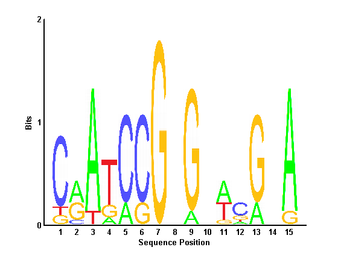
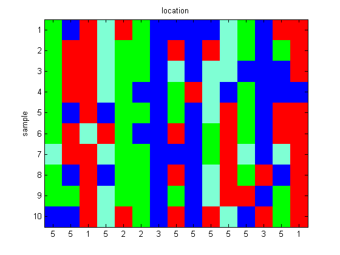
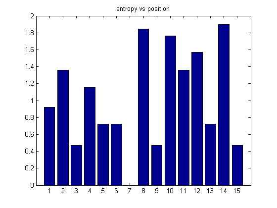
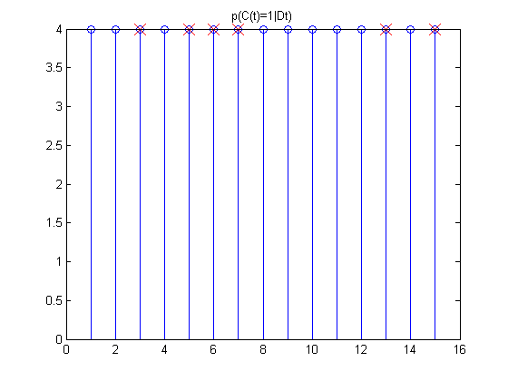

Biosequence analysis Demo
t = locn
Z(t)|w ~ Discrete(w(:)), k in {1,2,3,4,k}
theta(:,t) | Z(t)=k ~ Dir(alpha(:,k))
x(i,t) | theta(:,t) ~ Discrete(theta(:,t))Contents
Data generation
setSeed(1);
Nseq = 10;
Nlocn = 15;
Nletters = 4;
Nmix = 4;
pfg = 0.30;
mixweights = [pfg/Nmix*ones(1, Nmix) 1-pfg];
z = sampleDiscrete(mixweights, 1, Nlocn);
alphas = 1*ones(Nletters, Nmix);
for i=1:Nmix
alphas(i, i) = 20;
end
alphas(:, Nmix+1) = ones(Nletters, 1);
theta = zeros(Nletters, Nlocn);
data = zeros(Nseq, Nlocn);
chars = ['a' 'c' 'g' 't' '-']';
dataStr = repmat('-',Nseq , Nlocn);
for t=1:Nlocn
theta(:,t) = dirichlet_sample(alphas(:,z(t)), 1)';
data(:,t) = sampleDiscrete(theta(:,t), Nseq, 1);
dataStr(:, t) = chars(data(:, t));
end
for i=1:Nseq
for t=1:Nlocn
fprintf('%s ', dataStr(i,t));
end
fprintf('\n');
end
c g a t a c g g g g t c g a a
c a a t c c g a g a t c g c a
c a a t c c g t g t t g g g a
c a a t c g g c a t g c g g g
c g a g c c g c g t a c g a a
c a t a c g g a g c a c g a a
t a a t c c g g g c a t g t a
c g a g c c g a g t a c a g a
c c a t c c g c g t a a g c a
g g a t a c g a g a t g a c a
W = seqlogoPmtk(dataStr);
printPmtkFigure('seqlogo');

zStr = chars(z);
figure();
image_rgb(data); title('location')
set(gca,'xtick',1:Nlocn);
str = cell(Nlocn, 1);
for t=1:Nlocn
str{t} = sprintf('%d', z(t));
end
set(gca,'xticklabel',str);
ylabel('sample')

Inference
nvec = zeros(Nletters, Nlocn);
postZ = zeros(Nmix+1, Nlocn);
for t=1:Nlocn
prior = mixweights;
nvec(:,t) = hist(data(:,t), 1:Nletters)';
loglik = zeros(1, Nmix+1);
for k=1:Nmix+1
loglik(k) = logmarglikDirichletMultinom(nvec(:, t)', alphas(:, k)');
end
logprior = log(prior);
numer = logprior + loglik;
postZ(:, t) = exp(numer - logsumexp(numer(:))');
end
prob = nvec./repmat(sum(nvec,1),4,1);
figure()
bar(matrixEntropy(prob));
title('entropy vs position')
postC = sum(postZ(1:4,:));
figure();
stem(postC);
title('p(C(t)=1|Dt)');
hold on
for t=1:Nlocn
if z(t)<5
plot(t, postC(t), 'rx', 'markersize', 14);
end
end
set(gca, 'xlim', [0 Nlocn+1]);
placeFigures();
 